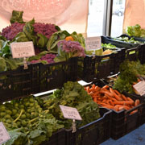

Although conventional supermarkets are usually more convenient than your local farmer’s market, more markets have appeared throughout Nassau and Suffolk counties on Long Island. When researching the benefits of farmer’s markets over conventional supermarkets, the health benefits are evident. Farmer’s markets provide the community with fresher, healthier and more nutritious food.
Value The Story
Read More
Long Island
Map

Facts
Community
Distance
Profit Margin
Security
Gallery
